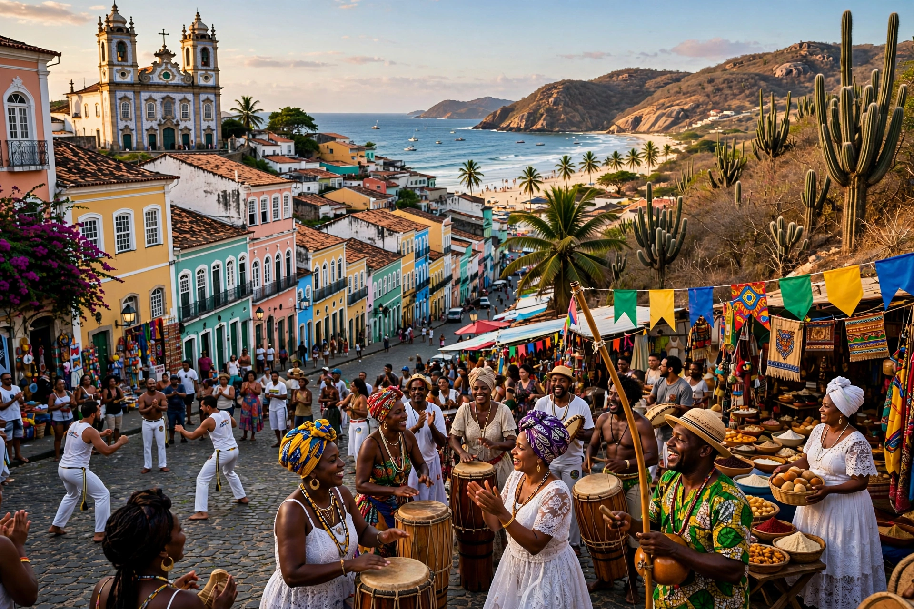

The Northeast Region (Região Nordeste) is one of the five official regions of Brazil, comprising nine states: Maranhão, Piauí, Ceará, Rio Grande do Norte, Paraíba, Pernambuco, Alagoas, Sergipe and Bahia. It is the region with the second-largest population, about 55 million.

| Northeast Region | |
|---|---|
| States | 9 |
| Largest city | Salvador |
| Area | 1,558,196 km² |
| Population | c. 54.6 million (2022) |
The region includes a humid coastal strip (zona da mata), the agreste transition, and the semi-arid sertão interior prone to drought, plus the cerrado of the west. Climate is largely tropical; see Oceanic climate for comparison.
First region colonised by Portugal, with Salvador as Brazil's first capital (1549). Culture blends Portuguese, African and Indigenous influences: forró music, literatura de cordel, Carnival, and Afro-Brazilian religions. Economy includes tourism, agriculture, petroleum, and growing wind and solar power.